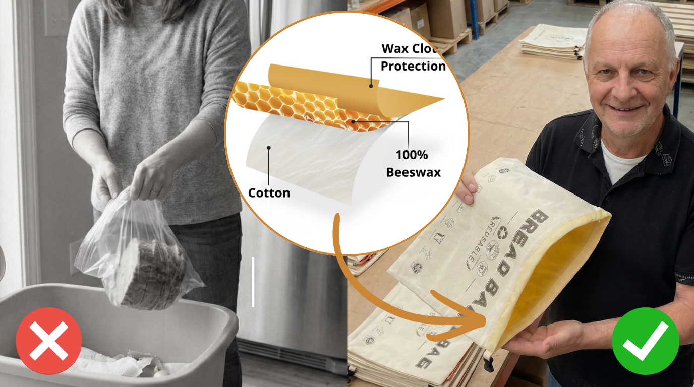
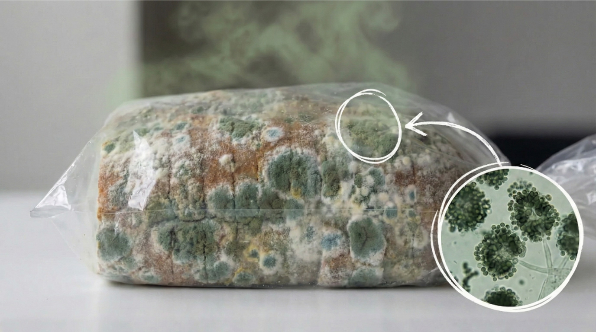
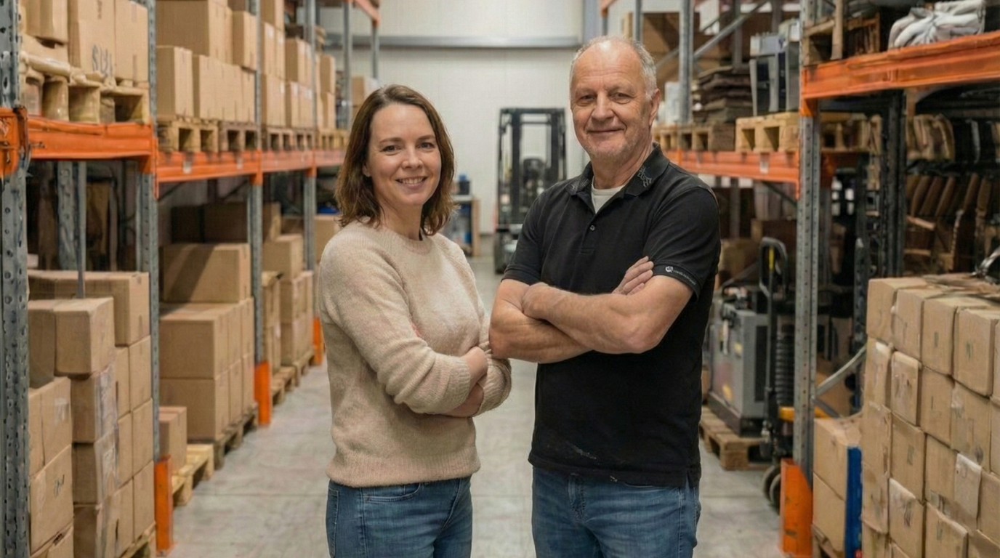
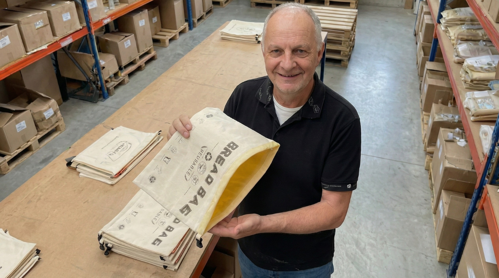
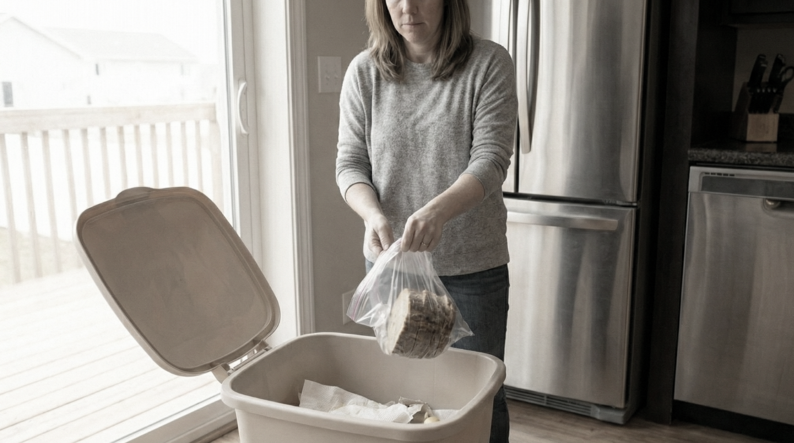

Why Your Bread Goes Bad So Fast (And The Century-Old Fix That Actually Outperforms Plastic)

"I wrote off beeswax storage as a gimmick for years. But when I finally tried a beeswax bread bag that worked, I was happy AND angry.. Because I realised I have been ruining perfectly good loaves for YEARS with the wrong storage method!" -
Plastic Is Destroying Your Bread Two Ways At Once
Here's something most people never realize...
Plastic doesn't just fail to keep bread fresh. It actively makes it worse. In two different ways. At the same time.
When you seal bread in a plastic bag, you're trapping moisture inside.
Bread naturally releases water vapor after baking. It's part of the cooling process that continues for days. The crumb is roughly 45 percent water. The crust is dry. And moisture is always moving from the inside out.

In open air, that moisture escapes harmlessly but In plastic, it has nowhere to go.
So it condenses. On the crust. On the inside of the bag where little water droplets appear.
That moisture saturates the crust. From the bread's own humidity, trapped in the plastic bag and forced back onto the surface.
The crust turns soft, rubbery, and leathery because it's slowly being drowned from the inside.
And here's the second hit: that same trapped humidity creates the exact conditions mold needs to thrive.
This is why bread in plastic often molds faster than bread left completely uncovered. You're not protecting it. You're feeding the problem.
Why The Fridge Is A Death Sentence For Bread

This one surprised me the most.
We've been taught that cold preserves food. And for most things, it does. But bread follows different rules.
There's a chemical process called starch retrogradation. It's what makes bread go stale. When bread cools after baking, the starch molecules slowly crystallize, pushing water out and creating that hard, dry texture we hate.
This crystallization happens fastest between 35°F and 40°F.
That's exactly your refrigerator temperature.
Studies show bread stored in the fridge stales six times faster than bread stored at room temperature. Six times. You're literally accelerating the aging process every time you put a loaf in the fridge.
The fridge does prevent mold. But at the cost of destroying the texture faster. You're trading one problem for another one.
So where does that leave us? Plastic creates mold. The fridge creates staleness. Paper and linen dry bread out within a day.
This is the trap that kept me freezing bread for three years. I thought those were my only options.
They weren't.
What Our Grandparents Knew That We Forgot
The solution has existed for generations. It just got lost when plastic came along: Beeswax
Beeswax-coated cloth is what our grandparents used. What every farm wife during the Depression knew. What families who couldn't afford to waste a single slice of bread figured out because they had to.
It creates something plastic and paper can't: a semi-breathable barrier.
It lets moisture escape slowly, at roughly the same rate bread naturally releases it. Not too fast (like linen). Not trapped completely (like plastic). Just enough to maintain balance.
The crust can breathe, so it stays crisp. The crumb retains enough moisture to stay soft. And without the humid greenhouse effect, mold spores can't take hold.
Then plastic came along. It was cheap. It was convenient. And America adopted it without ever learning why the old methods worked.
We skipped an entire chapter of bread storage knowledge.
The Man Who Decided To Make Them Properly

Adam Orvix and his wife run a small family business bringing real beeswax bread bags to American bread lovers. Made the same way his grandmother made them in Lyon (France).
Adam Orvix grew up in Lyon, France. Fourth generation of a baking family. Over a hundred years of bread-making tradition.
In his grandmother's kitchen, bread storage was never a problem. She'd wrap each loaf in beeswax cloth the moment it cooled. By the time the next baking day came around, the bread was still good. Not perfect, but genuinely enjoyable.
He never thought twice about it. That was just how bread worked.
Then he moved to the United States.
What he saw genuinely confused him. Home bakers, talented ones, throwing away half their loaves. Freezers stuffed with sliced bread. People accepting that fresh sourdough only lasts a day or two.
"They were solving the wrong problem," he told me in an email. "Americans kept trying to seal bread tighter. More plastic. Better containers. But tight sealing is exactly what kills bread. They needed the opposite, something that breathes."
He started looking for beeswax bread bags to recommend to the American bakers he met.
The Amazon Problem
Search "beeswax bread bag" on Amazon. You'll find dozens of options. They all look similar. Natural. Organic. Eco-friendly. And cheap. $12-25.
But the truth is: Most of them barely contain any beeswax at all.
Here's what Adam discovered when he started testing them:
To hit those low price points, manufacturers use thin fabric with a light wax coating sprayed on top. Some are mostly plastic with just enough beeswax to legally use the word in marketing.
The coating flakes off after a few uses. The fabric is too thin to regulate moisture properly. And the plastic content traps humidity, creating the same mold problem as a plastic bag.
This is why so many people try "beeswax bags," have them fail, and assume the whole concept is a gimmick.
The concept works. The cheap knockoffs don't.
Adam saw American bakers getting burned by inferior products and giving up on a method that had worked for his family for four generations.
So he decided to make them properly.
What "Properly Made" Actually Means

The Orvix bag uses thick, tightly woven organic cotton. Not the flimsy fabric in budget options.
But here's what really sets it apart: A thick layer of pure beeswax that's separate from the cotton. Not sprayed or coated on. You can actually remove it for washing.
The cheap knockoffs? That thin wax coating is stuck to the fabric. You can't clean it properly. Crumbs get trapped. The wax flakes off. Within weeks, you're back to the same mold problems.
With Orvix, you separate the liner, wash the cotton, and reassemble. Simple. Hygienic. Built to last years, not weeks.
Is it more expensive than the Amazon knockoffs? Yes. It costs about $35 instead of $20.
But here's the math that changed my perspective...
The Math I Wish I'd Done Sooner

Whether you bake your own bread or buy it from the bakery, waste adds up fast.
$12 sourdough from the farmers market. $8 loaves from the bakery. Good bread you chose over the preservative-stuffed stuff because you thought it was worth it.
$3–4 wasted per week. $150–$200 per year. Going stale, going moldy, going in the trash.
And that's just the money. If you bake, that's hours of feeding the starter, folding the dough, watching the rise, managing the oven — into the trash can because of a storage problem you didn't know you had.
If you've been trying to use less plastic, add fifty-two Ziploc bags a year to the tally. Just for bread.
The Orvix bag paid for itself in about three months. Everything after that is bread I actually eat instead of bread I throw away.
The Questions I Had!

I had so many questions before I ordered, so I reached out to Adam directly. He responded the same day.
"Does it make the bread smell like honey or wax?"
"There's a faint honey scent when it first arrives, but it doesn't affect the taste at all." Adam wrote back. "The scent fades within a day or two. We've never had a single complaint about flavor transfer. Not one."
He was right. Three months in, I've never tasted anything but bread.
"How do you clean it?"
"This is where we're completely different," he explained. "The beeswax liner separates from the cotton bag. Wash the cotton normally. For the beeswax, just turn it inside out and run it under cold water with a little soap. The cheap ones can't do this. Their wax layer is so thin it would never hold up on its own. Ours is thick enough to handle real cleaning."
Takes about a minute. And it's actually clean. Not "wipe and hope" like the cheap ones.
"How long does it last?"
"The cheap ones fall apart in weeks. Ours is built to last. With normal care, you're looking at years of regular use. My grandmother used hers until the fabric wore thin, and that took a long time."
After a few more emails, I told Adam how much this had changed things for me. How I wished I'd found it years ago. How I wanted to share it with other bakers stuck in the same freezer trap.
He surprised me.
"Let's do something for your readers," he said. "For the first 100 people who come through your article, we will give them a limited time offer of up to 50% OFF."
I thought he was joking. "I'd rather have two bags in a kitchen that gets used," he said, "than one bag sitting in a warehouse."
I don't know how long this will last but if the button below works, you can still take advantage of this offer.
Limited time deal for the first 100 readers. Up to 50% OFF
CHECK AVAILABILITY 👈What Other Bread Lovers Are Saying:
Game changer!
I've been baking sourdough for 8 years and tried every storage method. Bread boxes, linen bags, plastic, the fridge, the freezer.... The Orvix bag is the first one that actually performs. Day five bread with a crust that still cracks. I didn't think this was possible.
10 out of 10
I tried the cheap Amazon beeswax bags and they are a waste of money. The Orvix bag is noticeably thicker and heavier. Three months of daily use and it still looks new. Don't make my mistake and just buy the Orvix one right away.
No more bricks
My home baked loaves always turn into a brick by Wednesday if I don't freeze them. Now with Orvix it lasts to the last day (5 days) when we finish it. If you enjoy bread this is a no brainer.

Great product!
I have used and given as gifts because they work so well! My fresh baked bread lasts much longer, stays fresh, and holds my entire sourdough loaf! Super easy to access and seal. Perfect gift but buy an extra for yourself!!

Limited time deal for the first 100 readers. Up to 50% OFF
CHECK AVAILABILITY 👈